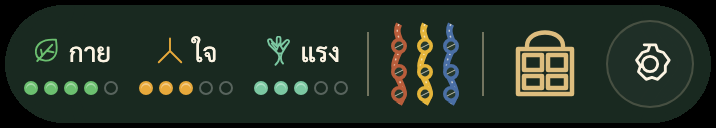

Master HUD เดียวกันทั้งสิบจอ

ใช้ขนาด 358×64 CSS px ร่วมกันทุกโหมดและทั้งสองอุปกรณ์ ตรวจเทียบพิกเซลภายในแคปซูลได้ตรงกันทั้งหมด ขอบโปร่งใสที่ผสานกับฉากอยู่นอกพื้นที่เปรียบเทียบ
JAOKOB · UX MOCKUPS V2
เปรียบเทียบภาพเดิมกับชุด Atomic Component ที่ประกอบด้วยฟอนต์ Sarabun จริง สไปรต์ Tachie v2 และไอเทมต้นฉบับ ครบห้าโหมดบน MacBook Pro และ iPhone
เส้นตรวจอ้างจากขอบ viewport เกมภายในกรอบเครื่อง และแสดงบนภาพ v2

ใช้ขนาด 358×64 CSS px ร่วมกันทุกโหมดและทั้งสองอุปกรณ์ ตรวจเทียบพิกเซลภายในแคปซูลได้ตรงกันทั้งหมด ขอบโปร่งใสที่ผสานกับฉากอยู่นอกพื้นที่เปรียบเทียบ
ผ่านการตรวจภาพและหลักฐานอัตโนมัติของชุดต้นแบบ
ชุดนี้เป็นภาพจำลองเพื่อพิจารณา UX และงานภาพ ยังไม่ใช่การตรวจรับเกมที่เล่นได้ครบ ไม่เปลี่ยนบท กติกาเกม Schema หรือ Save และไม่ใช้คะแนนตรวจนี้แทนการทดสอบ WCAG หรืออุปกรณ์จริง